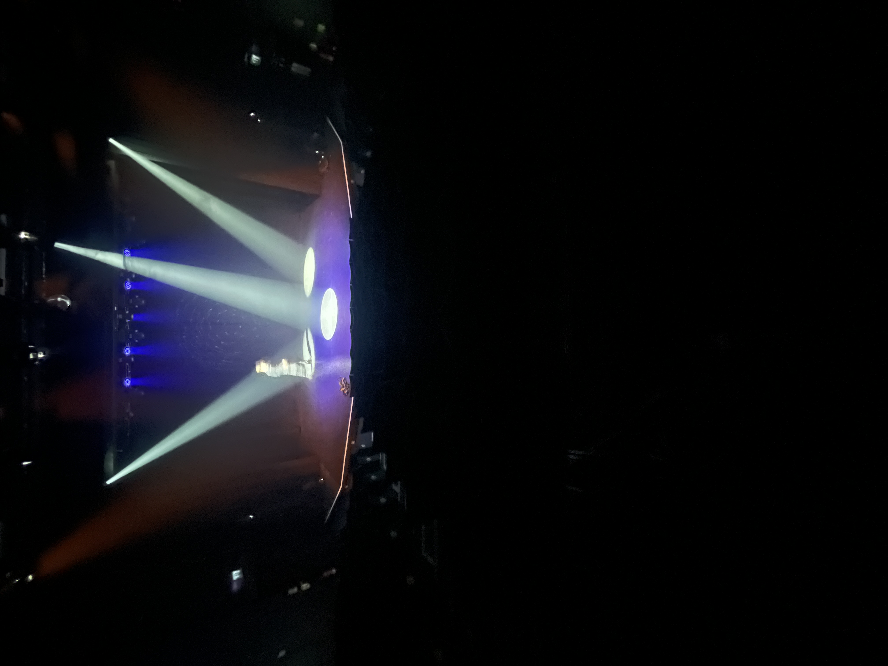

Technical Theatre | Engineering
Technical theatre professional with an engineering background, focused on reliable systems and practical problem-solving in live environments.
Lighting
ETC Eos family, conventional and moving light rigs
Sound
Digital mixing desks, radio mic fitting and monitoring
Show control
Cue-based operation and calm response to live changes
My engineering studies inform how I approach live systems, with an emphasis on understanding interactions, anticipating failure points, and keeping setups robust under pressure.
Email: alexmallettproductions [at] outlook [dot] com